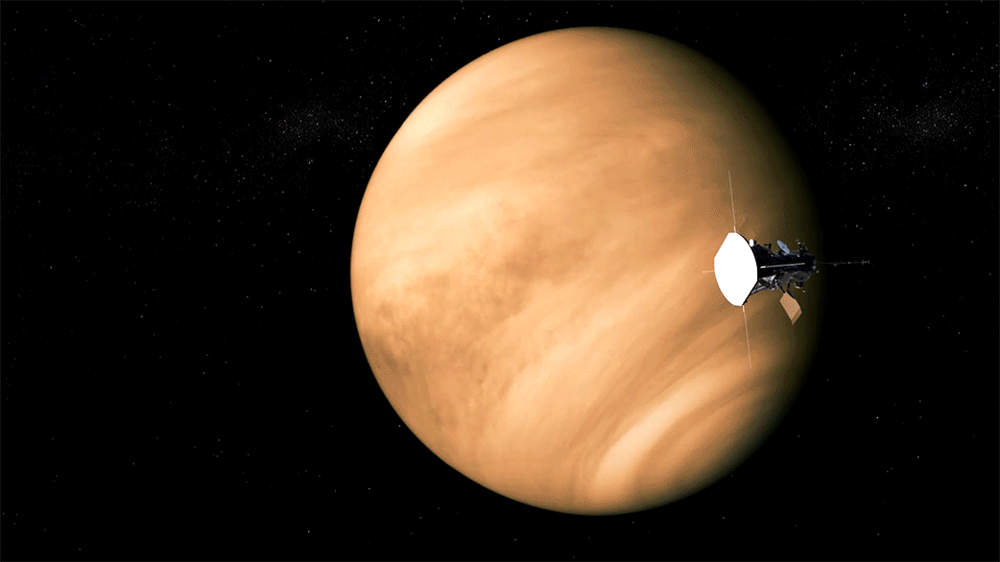
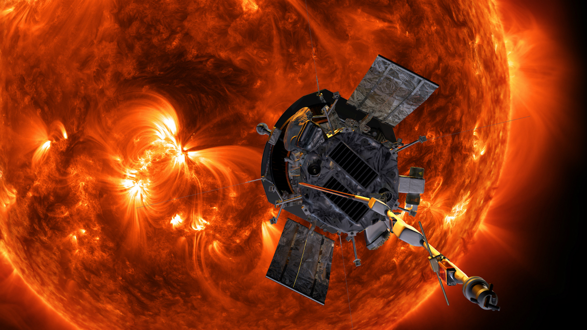
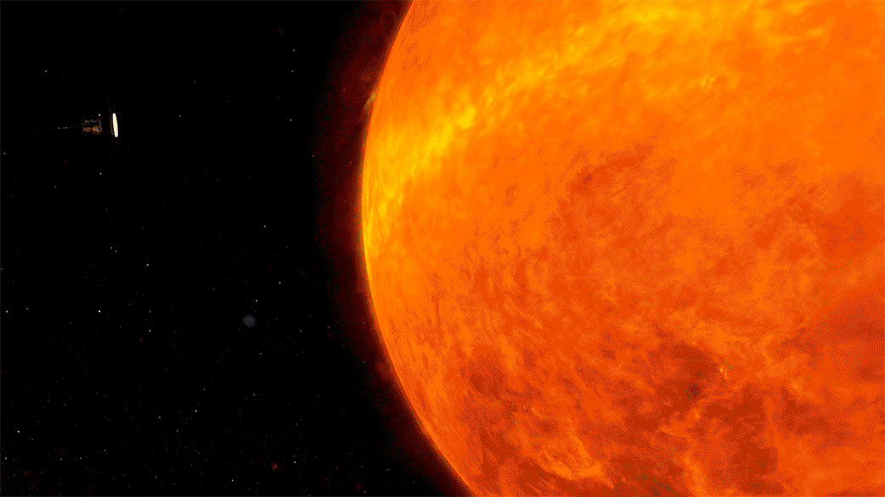
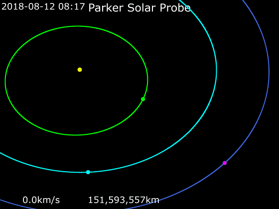
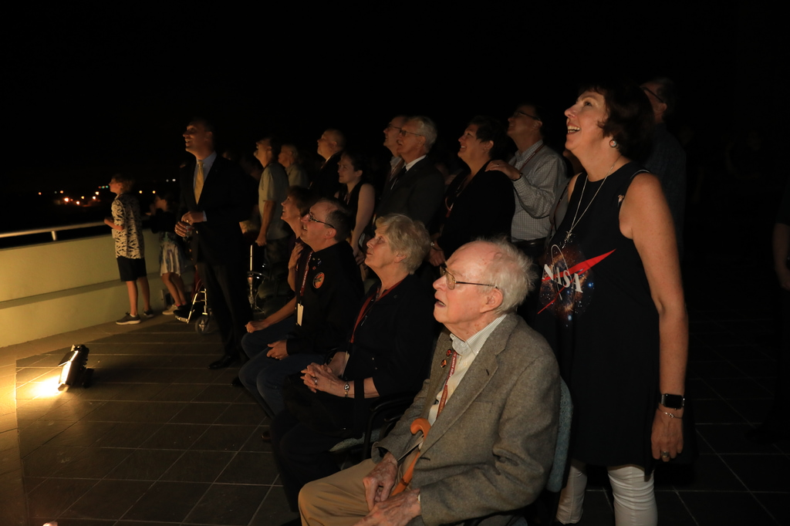
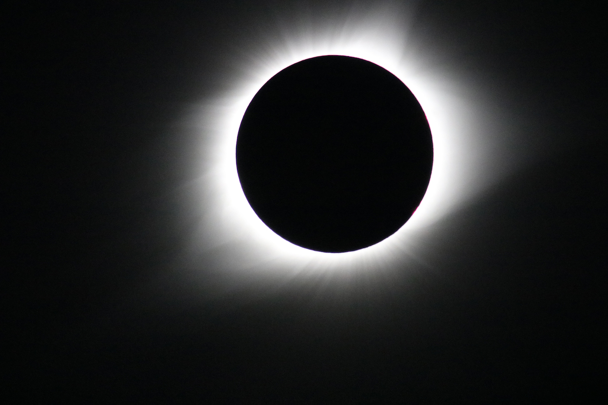
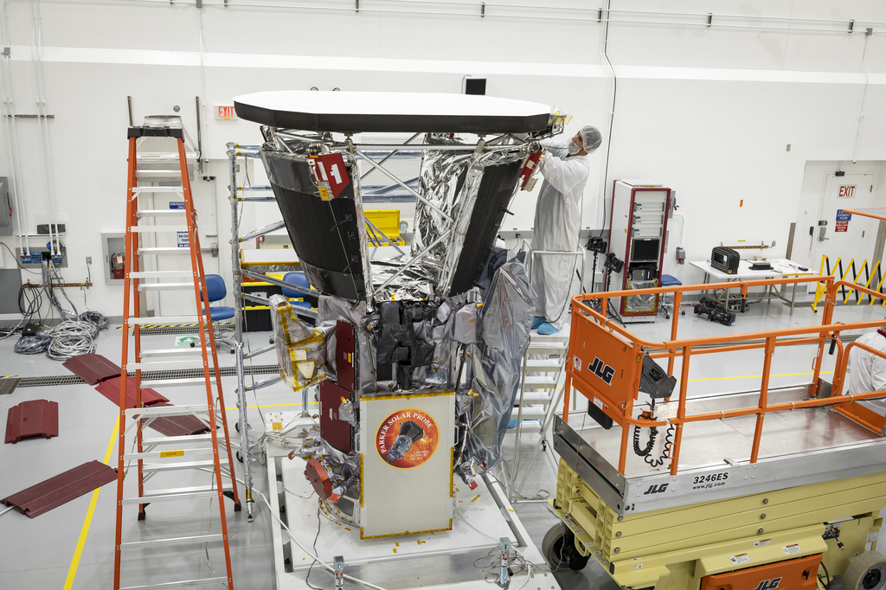

To the Sun
Explore.png)
At about 1,400 pounds, Parker Solar Probe is relatively light for a spacecraft, but it launched to space aboard one of
the most powerful rockets in the world, the United Launch Alliance Delta IV Heavy. That's because it takes a lot of
energy to go to the Sun — in fact, 55 times more energy than it takes to go to Mars.
Any object launched from Earth starts out traveling at about the same speed and in the same direction as Earth — 67,000
mph sideways. To get close to the Sun, Parker Solar Probe has to shed much of that sideways speed, and a strong launch
is good start.

Parker Solar Probe is headed for the Sun, but it's flying by Venus along the way. This isn't to see the sights — Parker
will perform a gravity assist at Venus to help draw its orbit closer to the Sun. Unlike most gravity assists, Parker
will actually slow down, giving some orbital energy to Venus, so that it can swing closer to the Sun.
One's not enough, though. Parker Solar Probe will perform similar maneuvers six more times throughout its seven-year
mission!

At its closest approach toward the end of its seven-year prime mission, Parker Solar Probe will swoop within 3.83
million miles of the solar surface. That may sound pretty far, but think of it this way: If you put Earth and the Sun on
opposite ends of an American football field, Parker Solar Probe would get within four yards of the Sun's end zone. The
current record-holder was a spacecraft called Helios 2, which came within 27 million miles, or about the 30 yard line.
Mercury orbits at about 36 million miles from the Sun.
This will place Parker well within the Sun's corona, a dynamic part of its atmosphere that scientists think holds the
keys to understanding much of the Sun's activity.

Parker Solar Probe will also break the record for the fastest spacecraft in history. On its final orbits, closest to the Sun, the spacecraft will reach speeds up to 430,000 mph( 692,017 kmph ). That's fast enough to travel from New York to Tokyo in less than a minute!

An animation of the Parker Solar Probe's trajectory from August 7, 2018, to August 29, 2025: Pink - Parker Solar Probe, Yellow - Sun, Green - Mercury, SkyBlue - Venus, Blue - Earth.
Parker Solar Probe is named for Dr. Eugene Parker, the first person to predict the existence of the solar wind. In 1958,
Parker developed a theory showing how the Sun’s hot corona — by then known to be millions of degrees Fahrenheit — is so
hot that it overcomes the Sun’s gravity. According to the theory, the material in the corona expands continuously
outwards in all directions, forming a solar wind.
This is the first NASA mission to be named for a living person, and Dr. Parker watched the launch with the mission team
from Kennedy Space Center in Florida.

Another question we hope to answer with Parker Solar Probe is how some particles can accelerate away from the Sun at mind-boggling speeds — more than half the speed of light, or upwards of 90,000 miles per second. These particles move so fast that they can reach Earth in under half an hour, so they can interfere with electronics on board satellites with very little warning. 
The third big question we hope to answer with this mission is something scientists call the coronal heating problem.
Temperatures in the Sun's corona, where Parker Solar Probe will fly, spike upwards of 2 million degrees Fahrenheit,
while the Sun's surface below simmers at a balmy 10,000 F. How the corona gets so much hotter than the surface remains
one of the greatest unanswered questions in astrophysics.
Though scientists have been working on this problem for decades with measurements taken from afar, we hope measurements
from within the corona itself will help us solve the coronal heating problem once and for all.
The corona reaches millions of degrees Fahrenheit, so how can we send a spacecraft there without it melting?
The key lies in the distinction between heat and temperature. Temperature measures how fast particles are moving, while
heat is the total amount of energy that they transfer. The corona is incredibly thin, and there are very few particles
there to transfer energy — so while the particles are moving fast (high temperature), they don’t actually transfer much
energy to the spacecraft (low heat).
It’s like the difference between putting your hand in a hot oven versus putting it in a pot of boiling water (don’t try
this at home!). In the air of the oven, your hand doesn’t get nearly as hot as it would in the much denser water of the
boiling pot.

The NASA International Space Apps Challenge – the world’s largest annual hackathon – returns this year with the theme
“Make Space,” which emphasizes NASA’s commitment to inclusivity. This year’s challenge will focus on Earth and space
science, technology, and exploration. Participant registration for in-person and virtual events is now open through Oct.
2.
Space Apps provides a platform where everyone across the globe with a passion for creativity and innovation can use
their unique perspectives to tackle challenges created by NASA experts. The challenges range in skill level, expertise,
subject matter, and objective, and span a spectrum of disciplines and interests that range from artificial intelligence
and software development to art and storytelling.
“Each year, Space Apps allows thousands to engage with NASA and its partners’ open data during the hackathon,” said
Thomas Zurbuchen, NASA associate administrator for the agency’s Science Mission Directorate. “It has been rewarding to
see the innovative projects created by Space Apps Challenge participants and observe their potential to generate
meaningful contributions toward solving some of the most difficult challenges studied by NASA on Earth and in space.”
Space Apps provides a positive and safe environment that fosters collaboration and a growth mindset. Whether
participants are exploring a challenge, learning to be creative, defining team roles, learning a technical skill, or
learning to cope with hiccups that arise during challenge weekend, the innovative and flexible structure of this event
allows participants to walk away enriched, motivated, and excited about learning.
“Talent is everywhere, but scarcity of opportunity leaves so much talent unused and potential untapped,” said Karen St.
Germain, director of NASA’s Earth Science Division. “There are so many positive stories resulting from this challenge
that underscore the value of ‘making space’ for everyone.”
Since its inception in 2012, Space Apps has created and steadily grown a global community held together by the common
interest of solving problems and creating impact. The success stories directly resulting from these challenges range
from the creation of new products and business ventures, innovative upgrades to existing products, and has helped
connect people socially and professionally, giving them access to expertise and insight they otherwise would not have.
By connecting teams to challenges and experts from space agencies across the world, participants have access to new
opportunities and knowledge that can impact them for a lifetime.
This year NASA is excited to announce the addition of the Indian Space Research Organization and Mexican Space Agency to
the roster of space agency partners supporting Space Apps. Valued partners returning from last year include Australian
Space Agency, Brazilian Space Agency, Canadian Space Agency, ESA (European Space Agency), Japan Aerospace Exploration
Agency, National Space Activities Commission of Argentina, National Space Science Agency of Bahrain, Paraguayan Space
Agency, and the South African National Space Agency. Space agency partnership encourages more extensive global
collaboration and provides a broader platform for participants to contribute to the fields of Earth and space science
and technology through Space Apps.
Space Apps is managed by NASA’s Earth Science Division in the agency’s Science Mission Directorate at NASA Headquarters
in Washington. It is organized in collaboration with Booz Allen Hamilton, Mindgrub, SecondMuse, and the NASA Open
Innovation Applied Sciences Program. Learn more about Space Apps and how to get involved on their website.